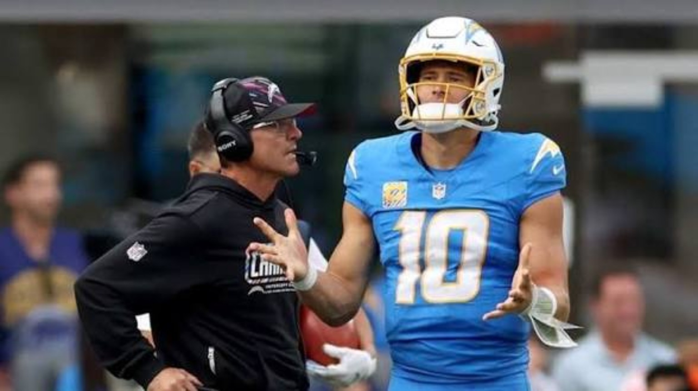

Twelve Sunday games. Quarterbacks missing. Division races tightening. A desperate Houston team gets the first stage, and the rest of the league follows its lead.
Sunday football starts before the West Coast finishes its coffee. Houston and Jacksonville meet across the Atlantic with completely different seasons on the line. Then seven games fill the early window, three more take the afternoon, and Dallas–Green Bay closes the night. We are watching the matchups, the personnel, and what actually translates into January—not claiming anyone has won a game that has not kicked off.
01 • 6:30 AM PT • Wembley Stadium • London
TEXANS @ JAGUARS. THE SEASON CAN TURN EARLY.
Houston is 1–4. Jacksonville is 4–1. That is not the entire story, but it changes what a divisional game means in Week 6. Jacksonville has built a strong start behind its defense and Trevor Lawrence; Houston finally got on the board against Tennessee and needs proof that one good Sunday can become a real recovery.
The headliner is the C.J. Stroud–Marvin Harrison Jr. reunion. The two former Ohio State teammates are together again, with Harrison expected to make his Texans debut in London. A receiver who understands Stroud's timing could change the passing game's ceiling. We are not declaring instant chemistry, though. Against a disruptive Jacksonville front, timing, route depth, protection and trust are going to be tested immediately.
Houston's running game has struggled to find consistency, making the loss of David Montgomery especially important. Woody Marks is positioned for more responsibility. Jacksonville cannot assume that means an easy afternoon: giving Stroud predictable passing downs lets its rush attack, led by Josh Hines-Allen and Travon Walker, dictate the afternoon—but also invites explosive plays if Houston holds up long enough.
Jacksonville's challenge is different. Can Trevor Lawrence manage the game without wasting its defensive work? Can Jacksonville generate enough sustained drives against Will Anderson Jr. and a Houston defense that can create real problems? The Jaguars lost left tackle Anton Harrison to injured reserve, increasing the importance of protection and how Lawrence gets the ball out.
Final Friday injury designations • Sunday inactives pendingHOU OUT: Tank Dell • David Montgomery • Jalen Pitre
Ja'Marcus Ingram and Henry To'oTo'o were questionable, although both were activated before the game. Jacksonville ruled out Montaric Brown and Ross Matiscik; Jaylon Jones was questionable. Activation does not guarantee being active on game day. Confirm official inactives before kickoff.
4DK watch: Harrison's targets, Stroud on third down, Woody Marks without Montgomery, Jacksonville's pressure without extra blitzers, and Lawrence's decisions when Houston compresses the throwing windows. This game matters more than a one-off London spectacle.
02 • Availability can rewrite the matchup
THE QUARTERBACK WATCH.
Philadelphia: Jalen Hurts is on injured reserve, so Tanner McKee takes over against Carolina. The Eagles cannot run the exact same offense and pretend nothing changed. Protection, play-action efficiency, third downs and red-zone discipline become more important without Hurts' threat as a runner.
Baltimore: Lamar Jackson is out against Cleveland for a second consecutive game, with Tyler Huntley set to start. The Ravens need manageable down-and-distance and a defense that does not put a backup quarterback in a weekly rescue situation.
New York Giants: Jaxson Dart was ruled out for the rest of the 2026 regular season following a knee injury in September. Jameis Winston was the Giants’ starter against the Saints, and J.J. McCarthy later entered the game. This was not a Dart-led matchup.
Chicago: Caleb Williams returned from his hamstring injury and played against Atlanta, with Michael Penix Jr. starting for the Falcons. Chicago won 31–23. The pregame questionable designation has been superseded by the confirmed game-day lineup and final result.
Monday's San Francisco watch: Nick Bosa is ruled out; Mike Evans is questionable, and Dre Greenlaw's suspension remains a factor. Washington has ruled out Jacory Croskey-Merritt. None of those are abstract names on a sheet: they change pass-rush rotations, perimeter matchups, and what Kyle Shanahan can expect from his supporting cast.
Original pregame QB and injury framework, updated October 18 after the results. Confirmed inactives and postgame reporting supersede early-week designations; other matchup previews remain archived rather than live.
03 • 10:00 AM PT • Seven games
THE EARLY WINDOW.
10:00 AM PT • AFC South
Titans @ Colts
Indianapolis needs to take care of divisional business while Tennessee tries to turn development into actual offensive consistency. We are tracking early-down efficiency, quarterback protection and which team can avoid playing from behind.
10:00 AM PT • Philadelphia
Panthers @ Eagles
With Hurts out and Tanner McKee starting, Philadelphia cannot rely on its familiar quarterback-driven answers. Carolina's opportunity is to force difficult third downs. The Eagles must create a sustainable offense rather than hope their defense wins every possession.
10:00 AM PT • Tampa Bay
Steelers @ Buccaneers
A game defined by physical possessions and the battle for field position. Pittsburgh cannot allow Tampa to establish easy rhythm, while the Buccaneers must keep the Steelers from turning the afternoon into a series of short fields and takeaway opportunities.
10:00 AM PT • AFC North
Ravens @ Browns
Tyler Huntley takes over for Lamar Jackson. Cleveland gets a chance to attack a Baltimore offense operating with a different playbook. If the Ravens control the run game and avoid long third downs, they can keep their preferred identity. If not, this becomes an uncomfortable divisional fight.
10:00 AM PT • New York • QB CORRECTION
Saints @ Giants
The actual quarterback matchup was Jameis Winston against his former team, New Orleans, and Tyler Shough—not Jaxson Dart. Dart was ruled out for the remainder of the regular season after his September knee injury. For the Giants, the relevant pregame questions were Winston’s risk-reward passing, protection, and how Malik Nabers and Isaiah Likely could move the chains. New Orleans needed to exploit turnovers and finish its scoring chances.
POSTGAME CHECK • OCT 18: Saints 34, Giants 27. Winston started; J.J. McCarthy later entered and led a late rally that came up short. Our initial Dart reference was incorrect and has been corrected.
10:00 AM PT • Atlanta • AVAILABILITY CONFIRMED
Bears @ Falcons
Caleb Williams returned from his hamstring injury and started opposite Michael Penix Jr. That resolved the earlier game-day availability question. Bijan Robinson’s effect on Atlanta’s offensive balance remained a central matchup theme.
POSTGAME CHECK • OCT 18: Bears 31, Falcons 23. The pregame questionable tag is archived, not presented as current.
10:00 AM PT • New England
Jets @ Patriots
Drake Maye's composure and the Patriots' protection face another divisional challenge. The Jets' best path is to disrupt early downs and make New England sustain long drives. Watch how New England responds if it cannot win on explosive plays alone.
04 • Afternoon games • All times Pacific
THE LATE WINDOW.

Chargers @ Chiefs • 1:25 PM PT
Bills @ Raiders • 1:25 PM PT
1:05 PM PT • NFC West
Cardinals @ Rams
The Rams need a disciplined response after a dramatic overtime loss to Buffalo. Arizona will test their ability to avoid another shootout and protect against explosive gains. Can Los Angeles control a divisional game with more balance and fewer high-leverage mistakes?
1:25 PM PT • AFC West
Chargers @ Chiefs
Justin Herbert faces an unbeaten Kansas City team with an offensive line still under stress. Patrick Mahomes and the Chiefs cannot assume the Chargers' record tells the whole story: L.A.'s defense has been more competitive recently. Watch the protection calls, third-down answers and how each team handles the other quarterback outside structure.
1:25 PM PT • Las Vegas
Bills @ Raiders
Josh Allen has the power to force coverage compromises, but the Raiders can make things uncomfortable if their rush wins early and their offense runs through manageable looks. We are looking at Las Vegas' ability to protect the football and sustain possessions instead of simply trying to match Buffalo big play for big play.
05 • 5:20 PM PT • Sunday Night Football
COWBOYS @ PACKERS. LAMBEAU DOES NOT GIVE EASY WINS.
Two recognizable franchises, one late-night measuring stick. Dallas is trying to avoid letting another shaky stretch define its season; Green Bay wants to show it can handle the game everyone is watching. The difference could be which quarterback stays patient against disguised coverages and which defense can get off the field in third-and-medium.
We want more than one spectacular drive. Dallas must be able to run a repeatable offense when the initial passing concepts are taken away. Green Bay needs offensive discipline and the kind of rush plan that forces difficult throws without losing containment. At night, with the crowd and field position changing possessions, special teams and penalties count.
06 • Monday, Oct 19 • 5:15 PM PT
COMMANDERS @ 49ERS. THE HEALTH TEST CONTINUES.
San Francisco is 5–0 and has earned the right to believe it can go deep. But Week 6 is also the warning sign that has hovered over the Niners for years: what does this roster look like when the injuries pile up? The absence of Nick Bosa matters for the pressure package, and Greenlaw's suspension changes the defensive second level. Mike Evans' questionable status threatens the receiving room just as his chemistry with Brock Purdy is becoming a major part of the offense.
Washington arrives without running back Jacory Croskey-Merritt, reducing its offensive options. The 49ers should have opportunities to dictate terms, but those opportunities mean little if they give Washington extra possessions through mistakes. Watch Christian McCaffrey's workload, the pace of Purdy's decisions, whether the pass rush survives missing key personnel, and whether San Francisco can win without relying on one star to do everything.
07 • From kickoff to final whistle
HOW 4DK COVERS THE DAY.
The scoreboard updates separately from our editorial work. After Sunday Night Football, the Sunday NFL Recap will document every game, verified final scores, the defining performances, coaching decisions, injuries that affected play and what matters next. Monday Night Football gets its own deep recap after the final whistle, followed by updated rankings, MVP Watch and Rookie Watch on Tuesday.
All kickoff times Pacific. This is a pregame feature prepared Sunday morning, October 18. Injury designations are not final inactives, and predictions or analysis are not presented as completed results.
 Bills @ Raiders • 1:25 PM PT
Bills @ Raiders • 1:25 PM PT